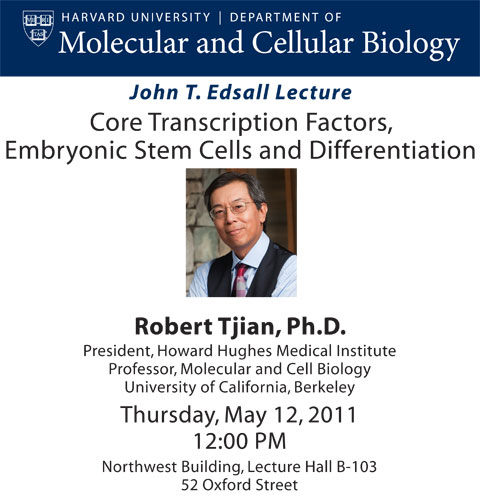
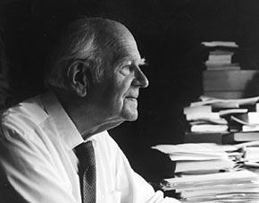

News Archives : 2011 : Robert Tjian to Deliver 2011 John T. Edsall Lecture
by Richard Losick
May 2, 2011

Robert Tjian, President of the Howard Hughes Medical Institute, will give the 2011 John T. Edsall Lecture on Thursday May 12th on “Core Transcription Factors, Embryonic Stem Cells and Differentiation.”
Robert Tjian was an undergraduate at the University of California at Berkeley where he did research with Daniel Koshland. He then came to graduate school at Harvard obtaining his PhD in 1976 in the former Department of Biochemistry and Molecular Biology on “Transcriptional Specificity Determinants of Bacillus subtilis RNA polymerase.” While at Harvard, Tjian was elected a Junior Fellow of the Harvard Society of Fellows, and, after completing his PhD, he joined Jim Watson at the Cold Spring Harbor Laboratories where he demonstrated that T antigen of the virus SV40 is a sequence-specific DNA binding protein.
Tjian then joined the faculty of his alma mater where he made the seminal discovery of the first sequence-specific mammalian transcription factor Sp1, showing that it binds to a specific element in DNA and activates transcription by means of an activation domain. At Berkeley, Tjian went on to discover many other important transcription factors, such as AP-1 and AP-2, the genes for the TATA-binding protein (TBP) associated factors (TAFs) of the basal transcription factor TFIID, and analogous complexes containing TBP-related factors, TRF1 and TRF2. Tjian developed the concept of the coactivator as a bridge between activators and the basal transcription machinery. Using elegant in vitro transcription assays with reconstituted factors, he then discovered the CRSP and ARC coactivator complexes. Most recently he has brought single-molecule approaches, structural biology, and optical methods to visualize transcription factors in single cells to bear on understanding transcription control mechanisms. He is also studying transcription mechanisms in stem cells and diseases, such as diabetes, cancer, Huntington’s and Parkinsons.
He is a member of the National Academy of Sciences, the American Philosophical Society and a winner of the Glenn Seaborg Medal, the Charles-Leopold Mayer Grand Prix, the Alfred P. Sloan Prize, California Scientist of the Year, Louisa Gross Horwitz Prize, Monsanto Award, Lewis S. Rosentiel Award, and the Passano Award. He became an Investigator of the Howard Hughes Medical Institute in 1987 and was named its President in 2009.
| The Edsall Lecture is given annually in honor of John Edsall, a member of the faculty of Harvard University from 1928 to 1973, when he became emeritus but remained engaged in research for more than 20 years. He died in 2002 a few months short of 100 years of age. Dr. Edsall's scientific career started in Edwin J. Cohn’s Department of Physical Chemistry at Harvard Medical School, where he studied the properties of the muscle proteins and of the amino acids. These studies among many others led to the 1943 book by Cohn and Edsall, Proteins, Amino Acids and Peptides as Ions and Dipolar Ions, which became a classic in the field of protein chemistry. During World War II he had a key role in isolating blood proteins for the war effort and developed fibrin foam, a porous form of a fibrin clot for use in neurosurgical procedures. In 1954, Dr. Edsall joined the Faculty of Arts and Sciences and moved to the Biological Laboratories, where he started research on carbonic anhydrase. He was greatly concerned with education. He was a tutor in the biochemical sciences concentration for 40 years and Head Tutor from more than 25 years. He taught a course on biophysical chemistry at the college from 1940 until he retired; the course led to the writing of a textbook with his closest scientific colleague, Jeffries Wyman. He had a leading role in 1954 in the formation of the Committee on Higher Degrees in Biochemistry, a graduate program leading to the PhD degree in biochemistry; the committee became the Department of Biochemistry and Molecular Biology in 1967. Dr. Edsall was also a champion in the fight for the freedom and integrity of science. – Guido Guidotti |
[May 2nd, 2011]